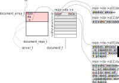

unagiサーバ内部では, 登録された文書をdocument_repo_t というデータ構造で管理している. したがってunagiサーバの機能の中核部分はこの, document_repo_t に文書を登録, 検索する機能である.
以下でunagiサーバのデータ構造を説明する. この節では, 最終的な目標である永続化や索引付けの機能を持たない, 単純なバージョンを説明する.
サーバが扱うデータ構造を図示したものが以下である.

- svは, unagiサーバのデータ全ての起点(server_t).
server_tの中にはその一要素として,
文書レポジトリを表す型
document_repo_tの要素(repo)を持たせておく.
server_tの定義を, (不要部分を省略して)示すと以下
(コードはdocument_repository.hを参照).
typedef struct { ... document_repo_t repo[1]; /** ドキュメントレポジトリ */ } server_t; - 図中ピンクの部分が上記のrepo. なお, 図中 sv->から始まる記号で, svを起点にそのデータへアクセスするための 式(要素名をたどるための式)を示している.
-
document_repo_tの定義は以下.
typedef struct { document_array_t da[1]; /** putされたドキュメントの配列 */ } document_repo_t; - document_array_tはdocument_t型を要素とする
可変長 (=拡張可能)配列
(C++のstd::vector<document_t>に相当)で,
溢れたら容量を拡張する. よく出てくるパターンなので,
図中の↓によって, 拡張されるかもしれない配列を示すことにする.
定義は以下.
typedef struct { size_t sz; /** 配列aのサイズ */ size_t n; /** 現在埋まっている要素数(n <= sz) */ document_t * a; /** ドキュメントの配列 */ } document_array_t;このような配列を作るにはあふれるたびに配列を1要素ずつ拡張するのではなく, 容量を等比級数的に(x2倍とか, x3/2倍とか)拡大するのが常套手段である (何故か考えてみよ). したがって実際のaのサイズ(格納しうるデータ数)と, 実際に埋まっているデータ数には差が有りうる. 前者をsz, 後者をnという要素で管理する. -
document_tは実質的には, ラベル(label)と文書の中身(data)の組である.
それぞれは単なるchar * (文字配列の先頭アドレス)である.
文字列の終わりがわかるようにするために, 合わせて長さ(バイト数)も格納する.
typedef struct { char * label; /* ラベル */ size_t label_len; /* ラベルの長さ(バイト数) */ char * data; /* データ(ドキュメントのテキスト) */ size_t data_len; /* データの長さ(バイト数) */ } document_t; - 新しい文書の挿入は単に, 文書の配列
(sv->repo->da)の末尾
(sv->repo->da->n番目)に
その文書を入れるだけである.

ただし配列が満杯でないことを確認し, 満杯の場合は拡張する. - このデータ構造においては, 検索は, 文書の配列(sv->repo->da)に格納されている 全文書の全データ(sv->repo->da->a[...].dataを, 頭から終わりまでスキャンすることで行う.
文書の登録と検索の関数
文書の登録, 検索に関連する関数は以下の通り. これら以外に初期化(init)や終了(destroy)などの関数もあるが省略する.
-
/* 登録 */ ssize_t document_repo_add(document_repo_t * repo, document_t d);
-
/* 検索 */ query_result_t document_repo_query(document_repo_t * repo, char * query, size_t query_len);
文字列を検索(query)した結果query_result_tという, データ構造が返される. query_result_tは, 検索した文字列が出現した位置を取得可能な何らかのデータ構造で, query_result_tのポインタに対して,
occurrence_t query_result_next(query_result_t * qr);
という関数を呼び出すと, ひとつ(次)の出現位置(occurrence_t)
が返される.
それは, 文書とその中の位置(offset)の組である.
typedef struct {
document_t doc; /* 検索文字列が出現したドキュメント */
size_t offset; /* doc中で検索文字列が出現した位置 */
} occurrence_t;
したがって全ての出現位置を得るにはqueryの結果返されたquery_result_t
に対して, 繰り返しquery_result_nextを呼び出す.
これ以上出現がなくなったときには, そうとわかる特別な
値を要素に入れて返すことにする.
まとめると, 全ての出現位置を得るため 雛形は以下になる.
query_result_t qr = document_repo_query(repo, query, query_len);
while (1) {
occurrence_t o = query_result_next(&qr);
if (!o.doc.label) break;
... o.doc.data[o.offset] から query が出現する ...
}
このインタフェースが守られていれば,
query_result_tの中身は,
検索のアルゴリズムに応じて中身を変更可能であることに注意.
なお, 上でも述べたとおり検索結果は概念的には出現結果の並びなので, それらを全て含んだ配列(ポインタ)を返す, というインタフェースも可能だが, 出現位置は潜在的には非常に多数になりうる. それらを返すためだけに大量のメモリを消費することを避けるために, このようなインタフェースになっている. ファイルの中身を読むのに, openして, readを繰り返し呼び出すと次々にデータが返され, ファイルの 終端まで達すると, 0 が返される, というのに似たインタフェースで, よく現れるパターンである. データベースの検索結果などもこのようなインタフェース返されることが多い.